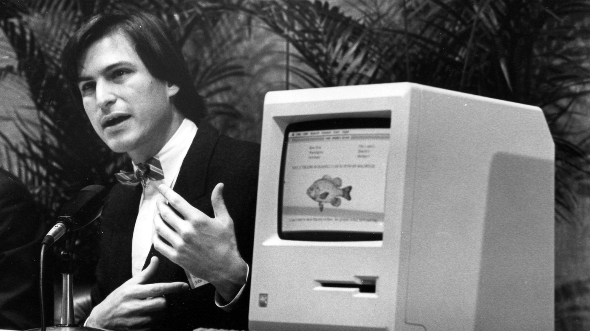

La carriera di Steve Jobs è segnata da grandi innovazioni e sfide. Nel 1976, fondò Apple Computer con Steve Wozniak, lanciando l’Apple I e, successivamente, l’Apple II. Nel 1984 presentò il Macintosh, uno dei primi computer con interfaccia grafica. Tuttavia, nel 1985 fu costretto a lasciare l’azienda che aveva creato.
Dopo l’uscita da Apple, Jobs fondò NeXT, focalizzata su soluzioni avanzate per l’educazione e le imprese. Nello stesso periodo acquistò la divisione grafica di Lucasfilm, creando Pixar, che rivoluzionò l’animazione digitale con film come Toy Story. Nel 1997 tornò in Apple come CEO e guidò l’azienda in una nuova era con prodotti iconici come l’iMac, l’iPod e l’iPhone. La sua capacità di vedere il futuro e reinventare la tecnologia è ciò che lo rende una figura unica nella storia dell’innovazione.
